МГУ
Московский государственный университет, один из ведущих вузов России.
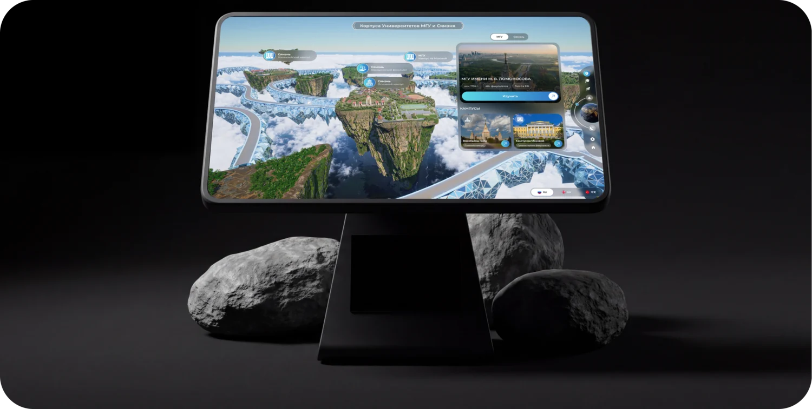
Интерактивное 3D-пространство на Unreal Engine 5, объединяющее цифровые двойники МГУ и Университета Сямэня. Пользователь исследует кампусы, факультеты, образовательные программы и проекты через touch-интерфейс.
Пользователь должен быстро понять структуру сложного образовательного пространства и уверенно перемещаться между университетами, разделами и объектами без обучения и инструкций.
ИССЛЕДОВАНИЕ ПРОБЛЕМЫ
На старте был определён набор сущностей, которые должны отображаться внутри системы.
Московский государственный университет, один из ведущих вузов России.
Крупный китайский университет с сильной научной базой.
Территории университета с учебными и административными зданиями.
Основные учебные подразделения университета.
Краткая общая информация об университете, его особенностях и роли в образовательной среде.
Акселерационные программы, студенческие проекты и стартапы для развития и поиска партнёров.
Развитие международных отношений России и Китая в сфере образования, науки и совместных проектов.
Задача состояла не в создании каталога информации, а в построении логичной структуры взаимодействия с этими сущностями.
После анализа контента была сформирована структура продукта. Цель — минимизировать глубину навигации и сократить количество переходов.
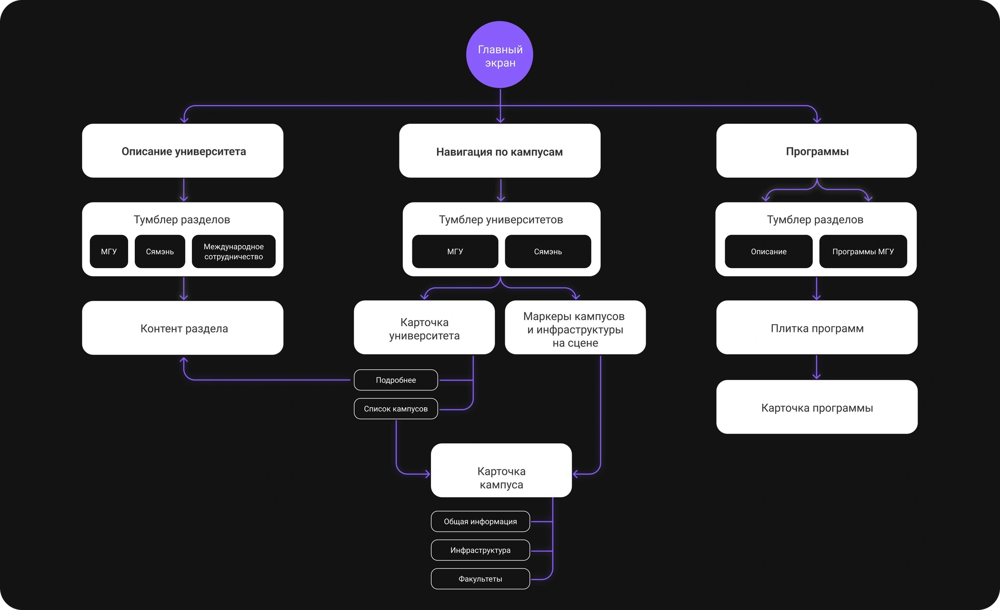
От главного экрана отходят три ветки:
Для выявления потенциальных проблем была построена упрощённая карта опыта.
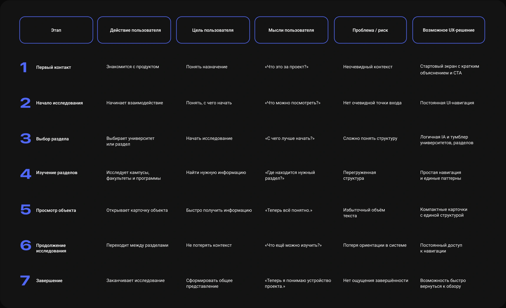
| Этап | Действие пользователя | Цель пользователя | Мысли пользователя | Проблема / риск | Возможное UX-решение |
|---|---|---|---|---|---|
| Первый контакт | Знакомится с продуктом | Понять назначение | «Что это за проект?» | Неочевидный контекст | Стартовый экран с кратким объяснением и CTA |
| Начало исследования | Начинает взаимодействие | Понять, с чего начать | «Что можно посмотреть?» | Нет очевидной точки входа | Постоянная UI-навигация |
| Выбор раздела | Выбирает университет или раздел | Начать исследование | «С чего лучше начать?» | Сложно понять структуру | Логичная IA и тумблер университетов, разделов |
| Изучение разделов | Исследует кампусы, факультеты и программы | Найти нужную информацию | «Где находится нужный раздел?» | Перегруженная структура | Простая навигация и единые паттерны |
| Просмотр объекта | Открывает карточку объекта | Быстро получить информацию | «Теперь всё понятно.» | Избыточный объём текста | Компактные карточки с единой структурой |
| Продолжение исследования | Переходит между разделами | Не потерять контекст | «Что ещё можно изучить?» | Потеря ориентации в системе | Постоянный доступ к навигации |
| Завершение | Заканчивает исследование | Сформировать общее представление | «Теперь я понимаю устройство проекта.» | Нет ощущения завершённости | Возможность быстро вернуться к обзору |
Если пользователь будет иметь постоянный доступ к основным разделам системы, он сможет быстрее переключаться между сценариями исследования и реже терять контекст внутри виртуального пространства.
Если информация о различных объектах будет представлена в едином формате, пользователи смогут быстрее находить нужные данные и тратить меньше времени на адаптацию к новым разделам.
Если пользователь сможет достигать ключевого контента не более чем за 2–3 действия, это снизит вероятность потери ориентации и упростит исследование пространства.
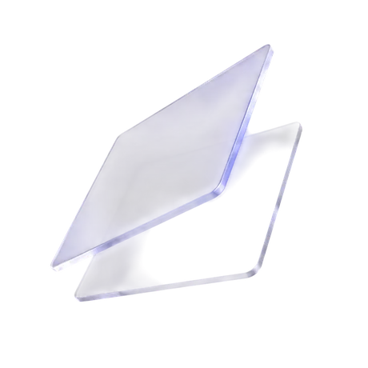
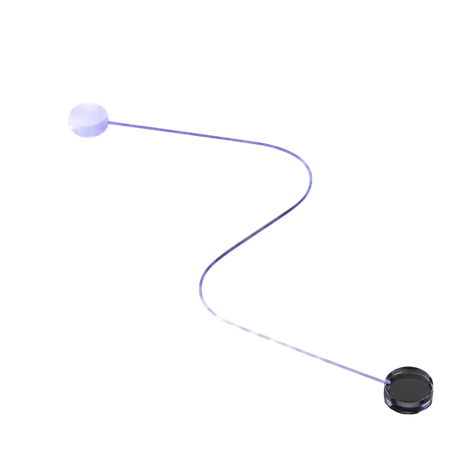
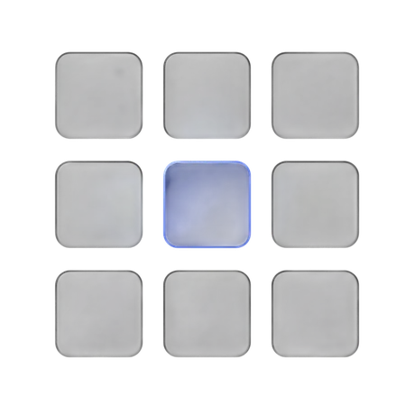
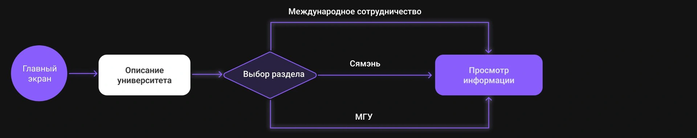
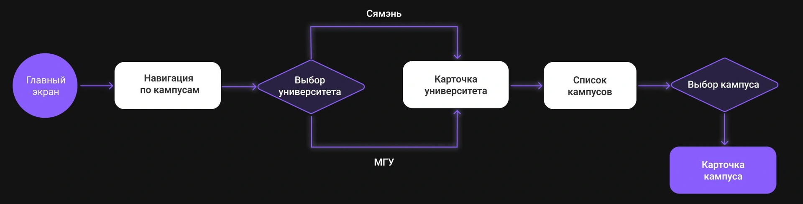
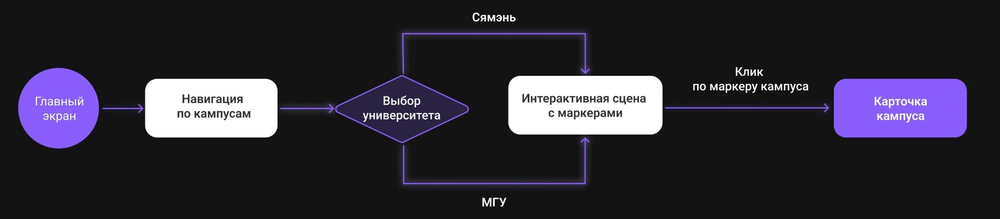
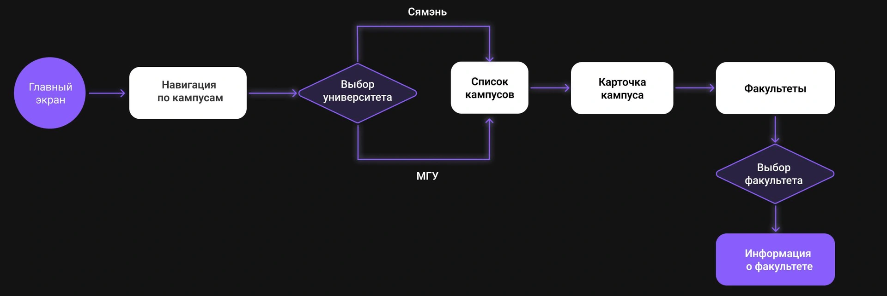
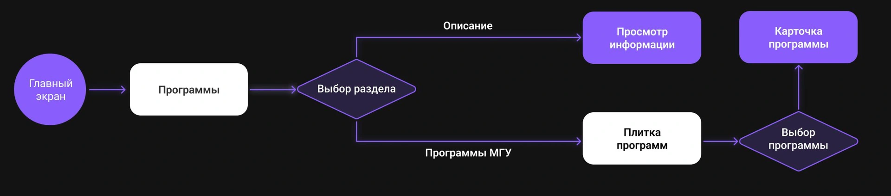
Навигационная панель

Переключение университетов

Карточки кампусов и факультетов

Раздел программ

Раздел сотрудничества

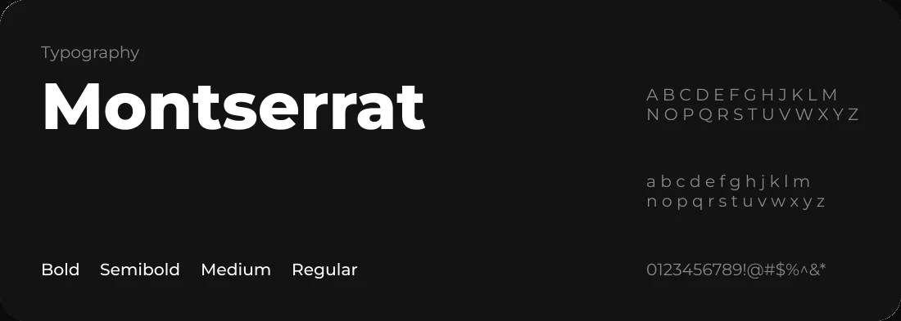
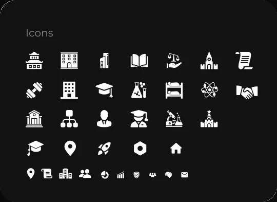
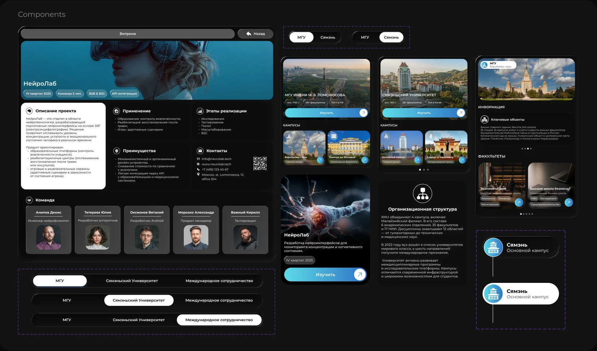
ПРОВЕРКА РЕШЕНИЙ
Проверить, насколько пользователи понимают структуру интерфейса и могут с первой попытки находить ключевые разделы продукта без подсказок.
В исследовании приняли участие 5 пользователей, ранее не знакомых с проектом.
Каждый участник последовательно выполнял четыре сценария без подсказок.
Во время тестирования фиксировались следующие данные.
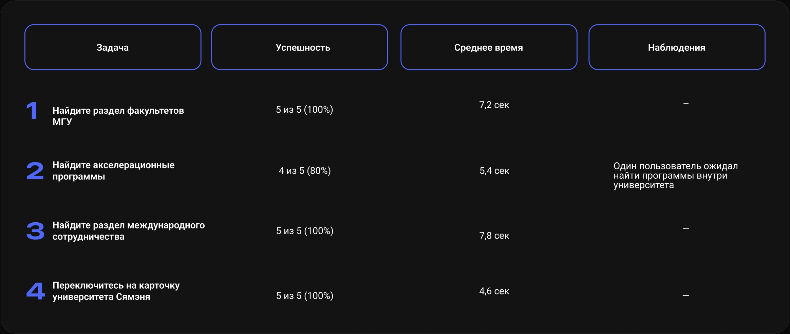
| Задача | Успешность | Среднее время | Наблюдения |
|---|---|---|---|
| Найдите раздел факультетов МГУ. | 5 из 5 (100%) | 7,2 сек | — |
| Найдите акселерационные программы. | 4 из 5 (80%) | 5,4 сек | Один пользователь ожидал найти программы внутри университета |
| Найдите раздел международного сотрудничества. | 5 из 5 (100%) | 7,8 сек | — |
| Переключитесь на карточку университета Сямэня. | 5 из 5 (100%) | 4,6 сек | — |
После прохождения сценариев были рассчитаны три базовые UX-метрики.
19 из 20 сценариев выполнены успешно
Среднее время выполнения пользовательского сценария
Среднее количество ошибочных действий до достижения цели
| Наблюдение | Изменение |
|---|---|
| Пользователи ожидали найти программы внутри университета | Усилен визуальный акцент самостоятельного раздела «Программы» |
| Пользователи тратили больше времени на поиск сотрудничества | Изменён порядок разделов в панели навигации |
| После открытия карточки часть пользователей искала способ вернуться | Добавлена более заметная кнопка возврата |
Если пользователь будет иметь постоянный доступ к основным разделам системы, он сможет быстрее переключаться между сценариями исследования и реже терять контекст внутри виртуального пространства.
Постоянная навигационная панель критически важна для удержания контекста в пространственных интерфейсах.
Если информация о различных объектах будет представлена в едином формате, пользователи смогут быстрее находить нужные данные и тратить меньше времени на адаптацию к новым разделам.
Единая структура карточек повышает предсказуемость интерфейса и снижает когнитивную нагрузку.
Если пользователь сможет достигать ключевого контента не более чем за 2–3 действия, это снизит вероятность потери ориентации и упростит исследование пространства.
Ограничение глубины навигации до 2–3 действий эффективно снижает риск дезориентации и делает исследование пространства более предсказуемым и линейным для пользователя.
Открыт к новым возможностям, интересным проектам и профессиональному сотрудничеству.